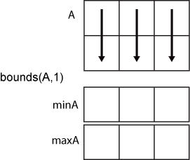

bounds
Minimum and maximum values of an array
Syntax
Description
[
computes the minimum and maximum values based on the dimensions specified in the
vector minA,maxA] = bounds(A,vecdim)vecdim. For example, if A is a matrix,
then bounds(A,[1 2]) returns the minimum and maximum values over
all elements in A, since every element of a matrix is contained
in the array slice defined by dimensions 1 and 2.
[
specifies whether to omit or include missing values in minA,maxA] =
bounds(___,missingflag)A for any
of the previous syntaxes. For example, bounds(A,"missingflag")
includes all missing values when computing the minimum and maximum values. By
default, bounds omits missing values.
Examples
Input Arguments
Input array, specified as a vector, matrix, multidimensional array, table, or timetable.
Data Types: single | double | int8 | int16 | int32 | int64 | uint8 | uint16 | uint32 | uint64 | logical | categorical | datetime | duration | table | timetable
Complex Number Support: Yes
Dimension to operate along, specified as a positive integer scalar. If you do not specify the dimension, then the default is the first array dimension whose size does not equal 1.
Consider an m-by-n input matrix,
A:
bounds(A,1)computes the minimum and maximum values in each column ofAand returns two1-by-nrow vectors.
bounds(A,2)computes the minimum and maximum values in each row ofAand returns twom-by-1column vectors.
Vector of dimensions, specified as a vector of positive integers. Each element represents a dimension of the input array. The lengths of the output in the specified operating dimensions are 1, while the others remain the same.
Consider a 2-by-3-by-3 input array, A. Then
[minA,maxA] = bounds(A,[1 2]) returns a 1-by-1-by-3
array for both minA and maxA. The
elements of minA and maxA are the
minimum and maximum values in the corresponding page of
A, respectively.

Missing value condition, specified as one of the values in this table.
| Value | Input Data Type | Description |
|---|---|---|
"omitmissing" | All supported data types | Ignore missing values in the input array,
and compute the minimum and maximum over fewer points. If
all elements in the operating dimension are missing, then
the corresponding elements in minA and
maxA are missing. |
"omitnan" | double, single,
duration | |
"omitnat" | datetime | |
"omitundefined" | categorical | |
"includemissing" | All supported data types | Include missing values in the input
array when computing the minimum and maximum. If any
element in the operating dimension is missing, then the
corresponding elements in |
"includenan" | double, single,
duration | |
"includenat" | datetime | |
"includeundefined" | categorical |